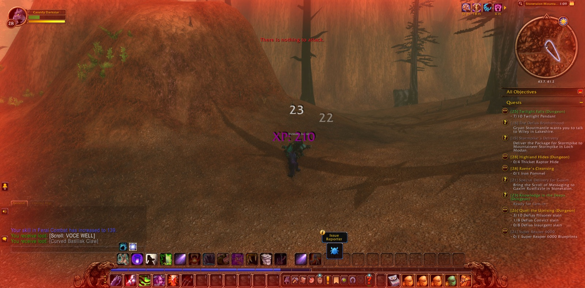
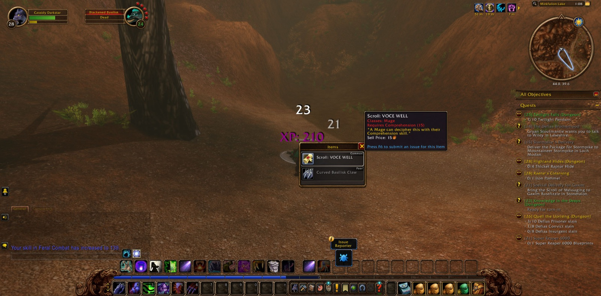
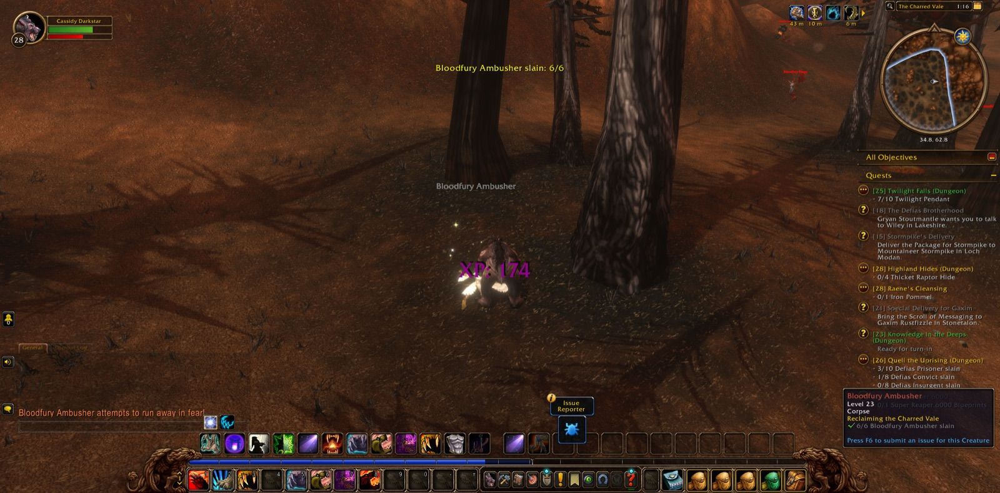
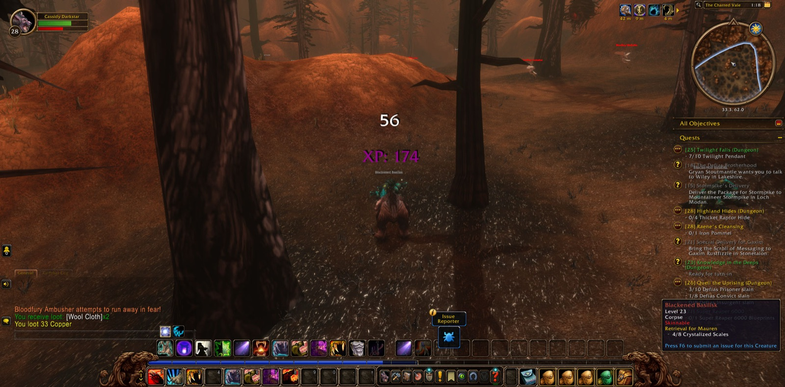
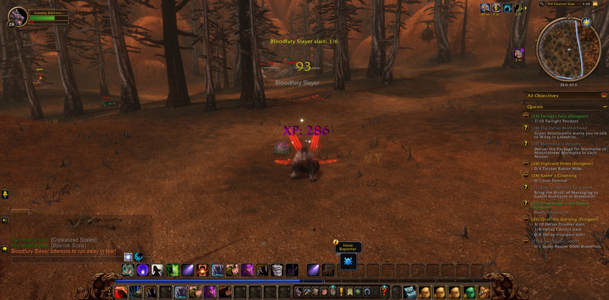
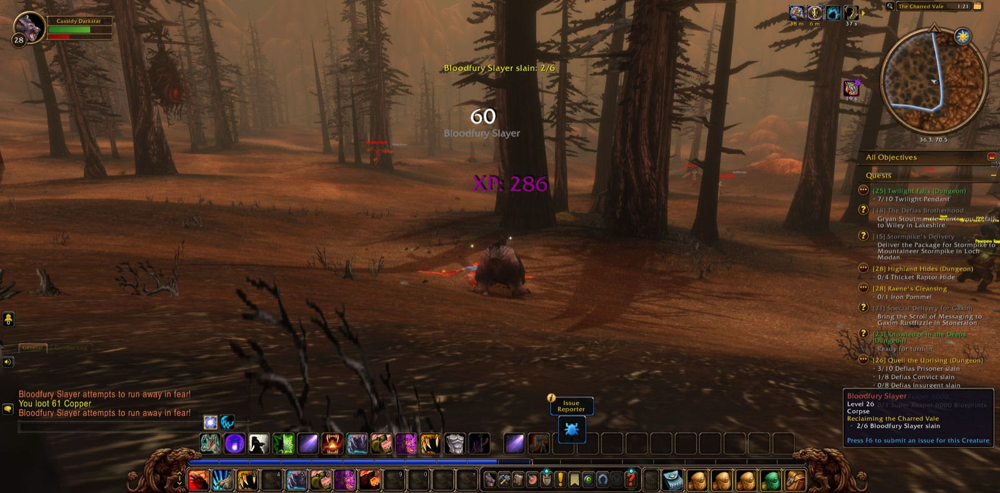
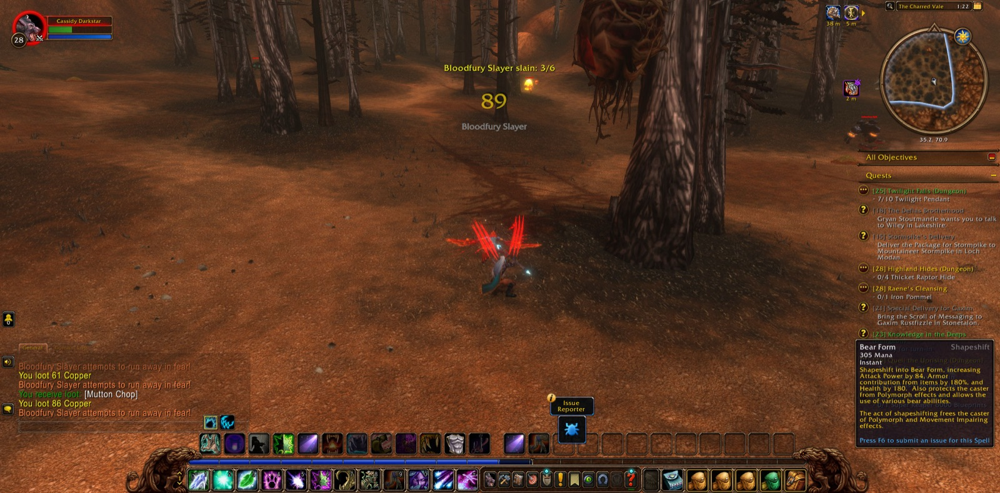
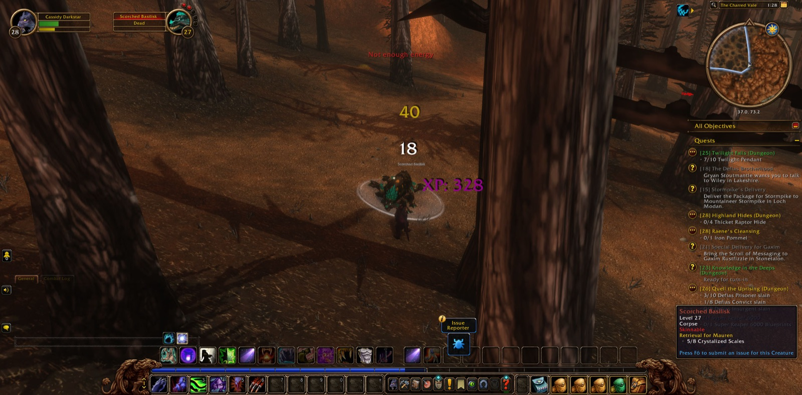
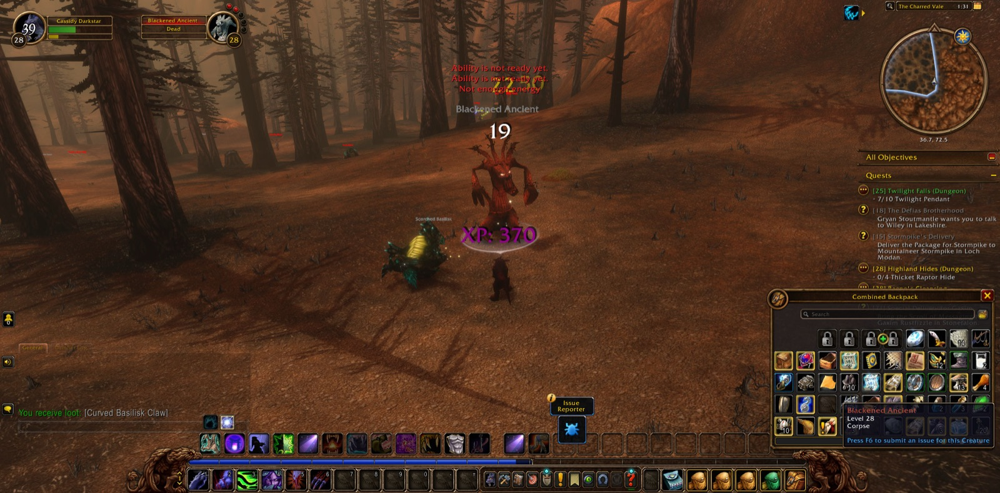
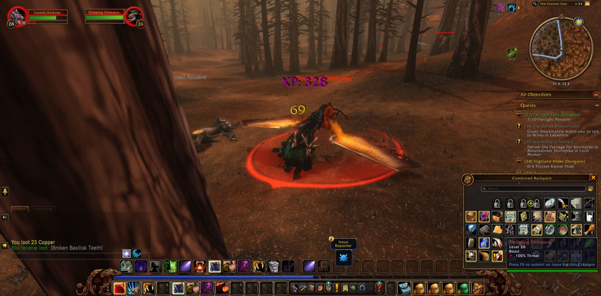

Cassidy Darkstar set out that day from the Tower of Althalaxx in Darkshore, and there, before ever he had left its stones, he was joined by two companions on the road: Nerved, a paladin, and Sethra, a warlock. Sethra parted from them almost as soon as she had come, and Nerved soon after, and Cassidy went on alone. He passed by Mist's Edge and came down to Auberdine, and from there by The Long Wash and the Twilight Shore. So he crossed out of Darkshore onto The Zoram Strand of Ashenvale and over the edge of The Veiled Sea. He came into the Stonetalon Mountains by way of Stonetalon Peak, and he paused to take a picture at each crossing.


Beyond Mirkfallon Lake his errands began in earnest. There he slew his first Blackened Basilisk, and then he went down into The Charred Vale, where the Bloodfury held the ground. For the task called "Reclaiming the Charred Vale" he hunted them steadily: the Ambushers first, then the Slayers, then the Roguefeathers, and among them the Storm Witches fell as well. Scorched and Singed Basilisks fell before him, and also a Blackened Ancient and a Fledgling Chimaera. The vale did not yield easily, and more than once he was obliged to walk back from Sun Rock Retreat along the Webwinder Path. Still he returned each time and took up the work where he had left it, and in the end all eight Crystalized Scales were gathered for "Retrieval for Mauren." Late in that labour Scoob, a warrior, joined him. Together they overcame a Furious Stone Spirit and saw the last of the Roguefeathers fall, and then Scoob went his way. Many pictures were taken in that vale, more than in any other place he passed.


Then Cassidy turned east. He saw "Special Delivery for Gaxim" through and took up "Castpipe's Task" in its place. At Windshear Crag, near the Blackwolf River, he found the blueprints of the Super Reaper 6000 and finished that errand. He was then given a Sealed Envelope to carry to Sputtervalve in the Barrens. By Greatwood Vale and Camp Aparaje he came down into The Barrens and Honor's Stand. Coked, a warrior, walked beside him from there past The Forgotten Pools and the Shrine of the Fallen Warrior and along the Gold Road, and they parted before Ratchet. In Ratchet Cassidy delivered his envelope and was sent on with further instructions. He also took on more work there: Blueleaf Tubers, with its crate, its manual and its command stick, as well as Deepmoss Spider Eggs and Raptor Horns. Past The Stagnant Oasis and down to Bramblescar he gathered the five horns he needed and brought them back to Ratchet, and in return he was asked to fetch the makings of Smart Drinks.


That errand led him by Lushwater Oasis to the mouth of the Wailing Caverns and into the Cavern of Mists. The way in was hard at first, but he pressed on, and there Hilde, a hunter, joined forces with him. Under her company he took up the matter of Deviate Hides and gathered all six Wailing Essences. They were still together in the Cavern of Mists when this page was left, and the deeper passages lay open before them.






